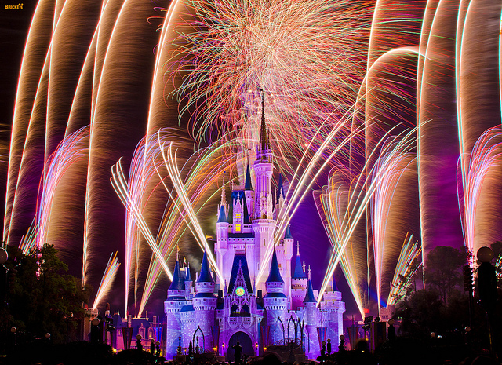

-
Main Street Electrical Parade
Most parades at Magic Kingdom begin at the back of the park and move toward the front, but the Main Street Electrical Parade begins at the front and heads toward the back. Spots along the route in Frontierland are usually good, but people who want to leave Magic Kingdom after the parade should watch from the front of the park so that they can leave right after the parade passes.
-
Wishes Fireworks Wishes fireworks are probably the best nighttime show at Disney World, in my opinion, and just before they begin, there's a castle projection show called Celebrate the Magic that's definitely worth seeing. People wanting a good view of both should find a spot near Casey's Corner. Those who want to leave right after fireworks (which is especially useful so you can get ahead of the crowds lining up to hop on the bus, monorail, or ferry) should find a spot at the front of the park for a quick exit as soon as fireworks end. You can also view Wishes from outside the parks by sitting on the beach areas of The Grand Floridian, Polynesian, Ticket and Transportation Center, and The Contemporary where the music is piped in.
-
Epcot Epcot has one nighttime show, Illuminations, which takes place on the lagoon in the World Showcase area. The nice thing is that there are lots of spots available (which is why I don't recommend the FastPass+ or dessert party here), but there are a few peninsula areas that are particularly nice spots to watch from if they aren't closed off for private events. There's a lot of smoke in the air during and after Illuminations and I know that the wind direction determines which way it goes, but it's always blown toward the UK/France side when I've seen it. People wanting to avoid that should consider spots on the Norway/Italy side of the lagoon.
-
Hollywood Studios If you prefer to be front and center for your fireworks, then the area right in front of the Grauman’s Chinese Theater, called Center Stage, is your best bet. Historically, this was where the giant Sorcerer Mickey hat used to be. Another great location is off over by Echo Lake to the left of Min and Bill’s Dockside Diner. You still have a lovely view of the fireworks overhead, and can have a little more breathing room from the more intensely popular Center Stage area.

-
The show was specifically designed to draw everyone to Cinderella’s castle in the evening with the intent of bringing family and friends together to make memories. Show creator Steven Davison said “they all might have different experiences during the day but at night we’re asking everyone to come to the Magic Kingdom to watch what happens when family and friends all make a wish together and see what happens in the sky”. -
Though the end of the night show has changed over the years, one constant has been Tinkerbell. Taking flight for the first time on July 4, 1985, this year will mark 30 years that Tinkerbell has thrilled crowds with her flight from the castle! -
Disney had pyrotechnics custom engineered to be tailored specifically for the Wishes Nighttime Spectacular. The show’s “wishing star” was designed to peak 100 feet above the castle’s spires. In addition, the Blue Fairy from Pinocchio is represented with a star-shaped shell which “draws” each wish in the sky using enchanted “starlight”. -
There are sixteen songs in the show – fifteen of which from ten Disney classics – “Snow White and the Seven Dwarfs” (1937), “Pinocchio” (1940), “Fantasia” (1940), “Cinderella” (1950), “Peter Pan” (1953), “Sleeping Beauty” (1959), “The Little Mermaid” (1989), “Beauty and the Beast” (1991), “Aladdin” (1992), and “Hercules” (1997). -
The show includes the voices of Jiminy Cricket, Snow White and the wicked Queen, Cinderella, Peter Pan, Ariel, Aladdin and Genie. -
During the show, Tinkerbell suddenly appears out of nowhere near the top of Cinderella’s castle and proceeds to fly about 850 feet across the Magic Kingdom towards Tomorrowland. Her fast-flying trip takes less than 30 seconds to cover the almost three football fields of distance that she travels. -
Disney incorporates an astounding 683 individual pieces of pyrotechnics into the show. That’s a lot of light and heat to pack into twelve minutes of entertainment. -
557 fireworks firing cues for the production. The display at the Magic Kingdom costs about $33,000 to put on – making Disney the largest consumer of fireworks in the world. Disney spares no expense when it comes to entertaining their guests – and the Wishes Nighttime Spectacular at Cinderella’s castle is no exception. Through a combination of nostalgic Disney movies, iconic characters, and special pyrotechnics engineered specifically for “Wishes”, this extraordinary show is sure to make the magic come alive for attendees of any age.
 
-